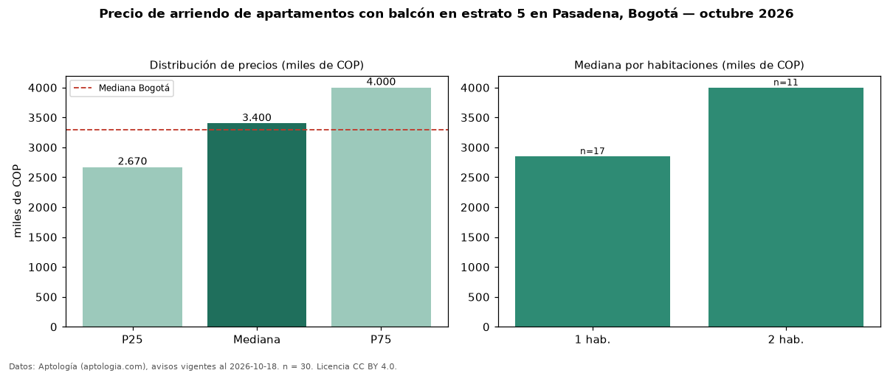

Precio de arriendo de apartamentos con balcón en estrato 5 en Pasadena, Bogotá — octubre 2026
Con 30 avisos vigentes, el canon mediano de apartamentos con balcón en estrato 5 en arriendo en Pasadena (localidad de Suba), Bogotá es COP 3,40 millones al mes. Frente a la mediana de los apartamentos en estrato 5 en arriendo de Pasadena (COP 3,05 millones, n = 48), queda 11 % por encima; este segmento reúne el 62 % de esos avisos. Por metro cuadrado, la mediana es COP 59.851/m² al mes (n = 30), 2 % por encima de los apartamentos en estrato 5 en arriendo de Pasadena (COP 58.462/m²). El área mediana anunciada es 62 m². El segmento con más oferta es el de 1 habitación (17 avisos, mediana COP 2,85 millones); pasar de 1 habitación a 2 habitaciones cambia la mediana +40 %. La administración mediana declarada es COP 490.000 al mes (n = 19), aparte del canon. La mediana de todos los apartamentos en arriendo de Bogotá es COP 3,30 millones (+3 % de diferencia). La mitad central de los avisos va de COP 2,67 millones a COP 4,00 millones (razón 1,5), una dispersión moderada. Datos: Aptología (aptologia.com), CC BY 4.0 — https://www.aptologia.com/arriendo/bogota/pasadena. Archivos: PDF, CSV con las cifras y gráfica PNG.

| Avisos únicos | 30 |
|---|---|
| Percentil 25 | COP 2.670.000 |
| Mediana | COP 3.400.000 |
| Percentil 75 | COP 4.000.000 |
| Mediana por m² | COP 59.850 |
Fuente: avisos vigentes de portales inmobiliarios recopilados por Aptología, deduplicados (mínimo 30 avisos únicos por celda). Precios pedidos, no cerrados. Fecha: 2026-10-18.